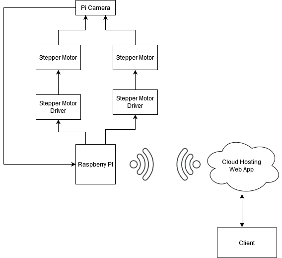

Smart Camera
Neil Morrison & Stephen McIntyre
Cloud Based streaming camera which can also control pitch, yaw and roll of the camera, from a HTML page.
The server will be hosted on a Raspberry PI.
The hardware will involve Raspberry PI, PI camera, 2 stepper motors and 2 stepper motor drivers.
The video stream will be hosted in the cloud using RTCP to transport the data.
The camera has an LDR to detect night and day which we can use to auto turn on by using the IR sensor built in
.
